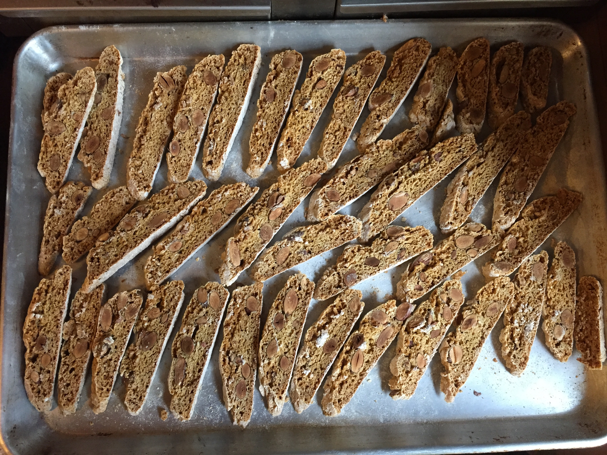

Biscotti di Prato (Atlantic,6/87)
(Based on a recipe by Corby Kummer from the June 1987 issue of Atlantic Magazine)

-
1 cup raw almonds
-
3 eggs
-
2 cups flour
-
1/2 teaspoon vanilla extract
-
1 cup sugar
-
1 teaspoon baking soda
-
1 pinch salt
Key point:
The dough should be sticky and gooey but covered with a thin coat of flour, so it can be handled.
It should be mixed and handled as little and gently as possible.
-
Roast 1 cup (5 oz.) of whole, unblanched almonds at 300° until
lightly browned.
Test and stir around every 10 minutes until inside is lightly browned and almond tastes mildly toasted.
-
Cool nuts. Lower oven to 275°-300°. Butter and flour a cookie sheet.
-
Mix in a bowl: 2 cups unsifted flour, 1 cup sugar, 1 teaspoon baking soda, and
a pinch of salt.
-
In a food processor, mix 3 eggs, 1/2 tsp. vanilla for 5 seconds. Add dry ingredients a half cup at a time, with 5 short pulses after each addition. Add only until dough is still gooey and lightly covered with a coat of dry flour. Actual amount of flour needed will vary, depending on the size of the eggs and moisture level of the flour. More flour can be added in next step, if needed.
-
Remove gooey, sticky dough and put on a surface covered generously with flour. Flatten gently into a large disk. Spread nuts evenly across the dough and then gently fold dough repeatedly to create a ball of dough filled with nuts. Sprinkle flour, as needed, so surface of dough is dry and manageable.
-
Divide dough into 2 equal parts. Roll gently into 1 inch wide strips that are 12-14 inches long. Place on cookie sheet at least 3 inches apart and bake for 50 minutes.
-
Cool for 5 minutes. Slice with a sharp knive into 1/2 inch thick or thinner diagonal bars.
- Lay cookies on their sides and bake for about 15-20 minutes per side. Flip regularly and bake until each side is nicely browned.
-
Cool on a rack.